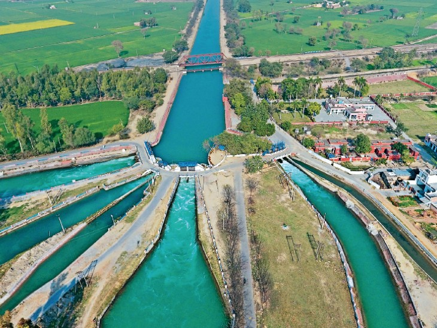

About Me
My Name is Kush Saini. My Father Name is Sh. Satbir Singh Saini s/o Late Sh. Maan Singh.
I am from Tohana(125120) District: Fatehabad State: Haryana
In Tohana, the Sutlej River is subdivided into 7 Canals. Each Canal contains millions of liters of crystal clear water.
The Sutlej River originates from Rakshastal Lake, located near Mount Kailash in Tibet, which is situated near Mansarovar.

- I have many Skills like Knowledge of Wired Data Transmission in Coaxial cable, Optical Fiber Cable, Twisted Pair Cable or Little bit known About Electronic Device Repairing 🧑🔧 (Amplifiers, Node, Small Circuits Boards, Earphones etc.).
- My Hobbies is climbing, playing Chess♘, Writing in Notebooks 📝.
- I Love Learning Deep About Computer 🖥 Hardware & Software and Its Working.
- I Like Cow's Baby(Calf) 🐮, Puppies 🐶.